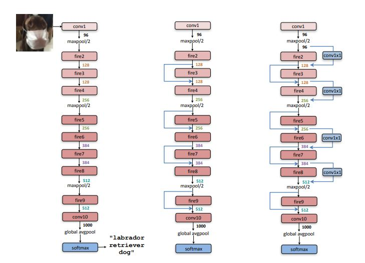

It uses different alteration to reduce
the number of parameters as compared to the 2D version
which employs depthwise convolution. Those three modifications are: 1) Change the shape of filters from 3x3 to 1x1,
2) Input channels to 3x3 filters is reduced, and, 3) to maintain large activation maps high resolution is maintained till
deep layers.
More details can be found
here.

Macroarchitectural view of SqueezeNet architecture. Left: SqueezeNet;
Middle: SqueezeNet with simple bypass; Right: SqueezeNet with complex bypass